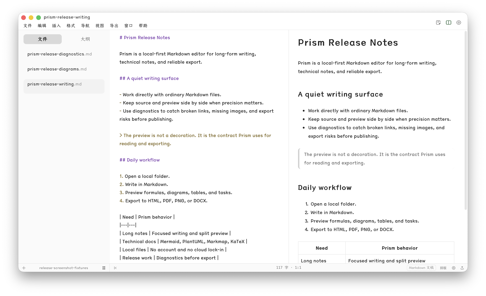
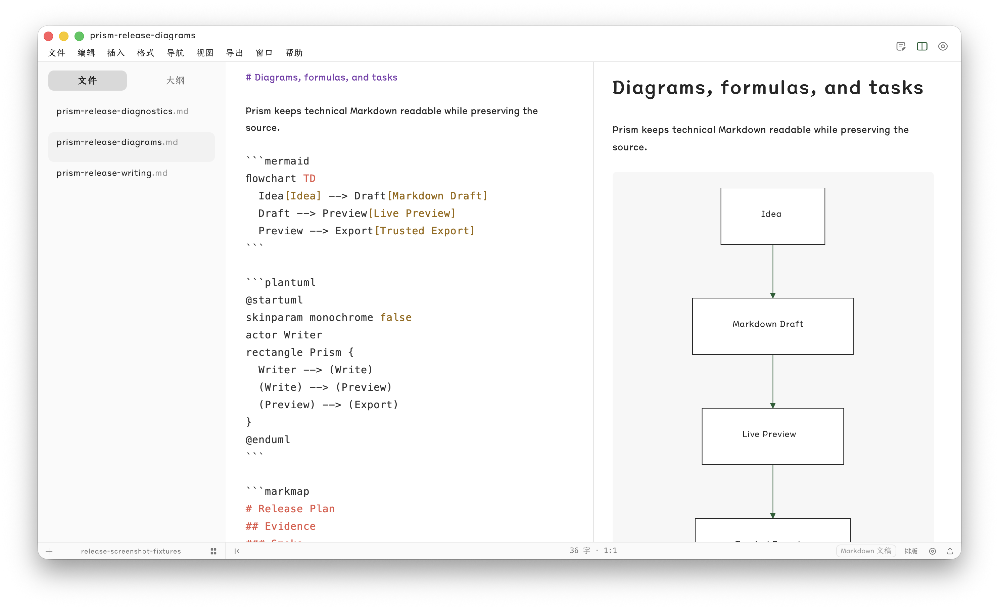
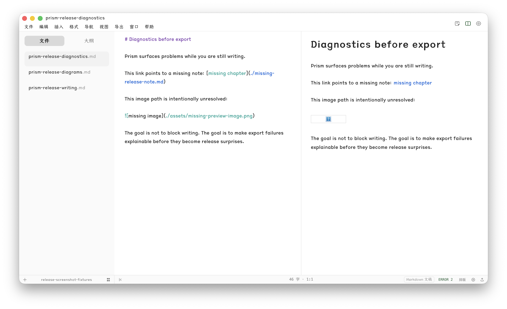
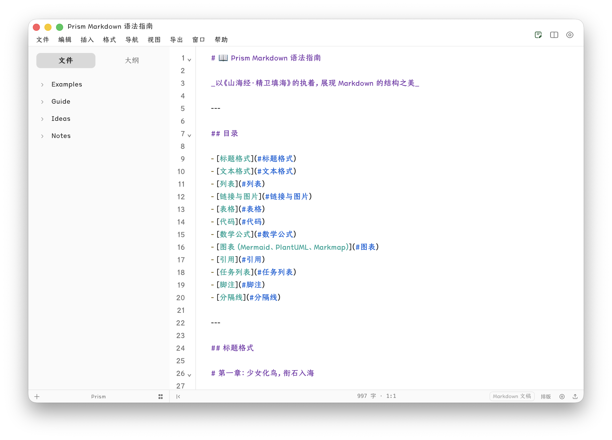
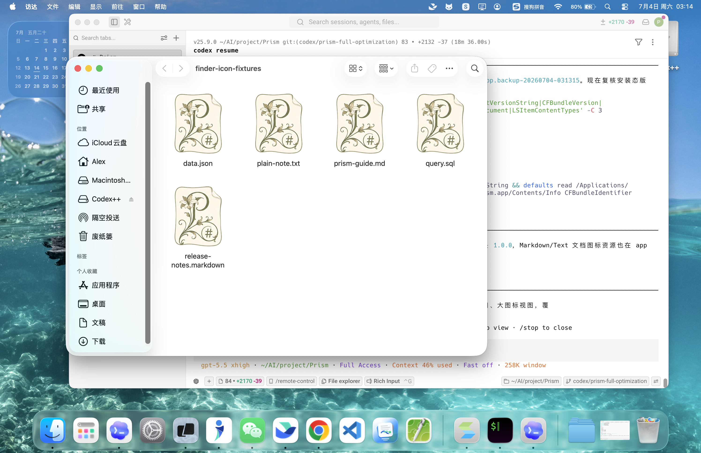
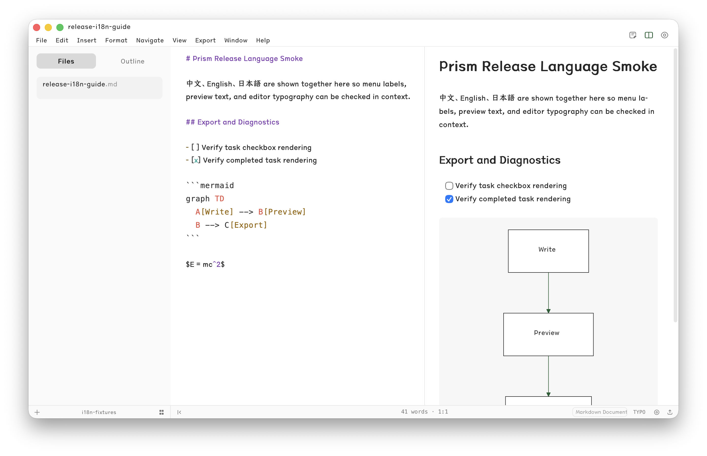

Local-first
Prism opens and edits local Markdown/text files directly, with a first-run Documents workspace seeded into the user folder.
Prism is an open-source Markdown editor for long-form and technical writing, focused on local files, faithful preview, dependable export, and diagnostics that help you fix what matters.
These screenshots are captured from the current macOS release build, not static mockups.


The release pack keeps the proof visible so 1.0.0 does not depend on undocumented assumptions.


macOS ships first. Windows and Linux stay staged until real-device validation is complete.


Prism opens and edits local Markdown/text files directly, with a first-run Documents workspace seeded into the user folder.
HTML, PDF, PNG, and DOCX smoke checks pass in the installed macOS app, with diagnostics available when export risks appear.
Known validation gaps remain documented: Windows/Linux real-device release, full offline proof, high-DPI matrix, and memory pressure runs.